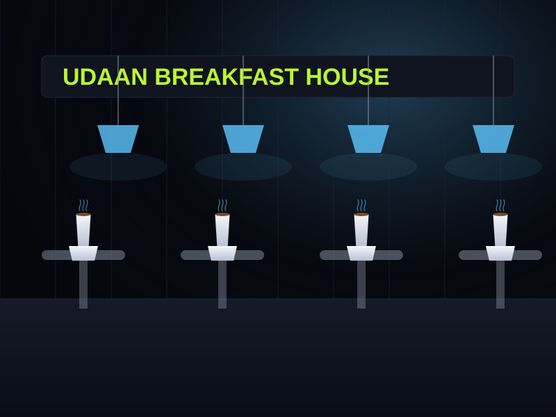
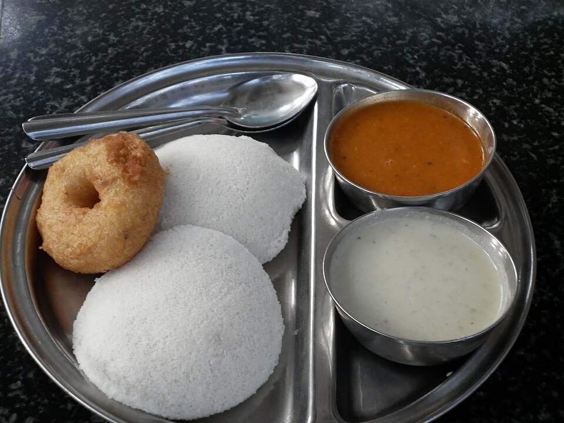
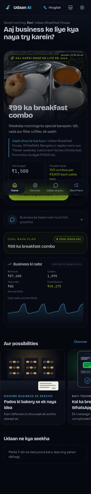
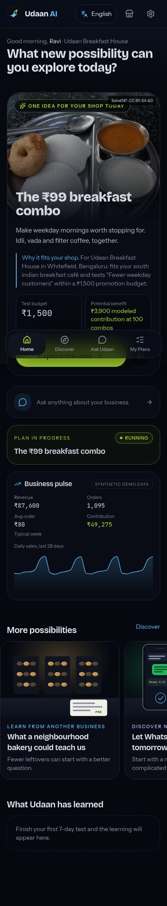
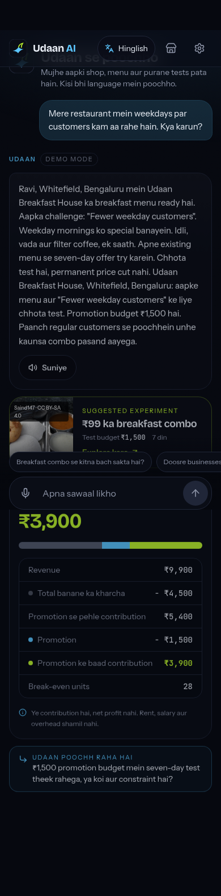
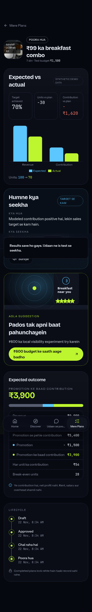
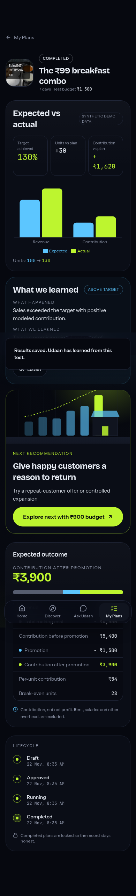

It understands me
Shop, menu, prices, making costs, weekday patterns, budget and language — retained as business context, not re-typed into every chat.

Product thesis · Early-stage prototype · RFS 76
An AI companion that understands your business, speaks your language, and grows with you.



Ravi is fictional. His constraints are not.
He owns a small South Indian breakfast café in Whitefield, Bengaluru. He handles the batter, the staff, the suppliers, the UPI reconciliations and the customer who wants extra chutney.
He watches bigger chains launch subscriptions, loyalty apps and QR menus. He is ambitious. What he lacks is not drive — it is an hour to explore, and someone to tell him which idea actually fits a shop his size.




Actual screenshots captured from the working prototype at 390px. Business data is clearly labelled synthetic demo data.
Every experiment Ravi runs becomes memory. Every memory sharpens the next possibility.
Udaan surfaces one idea that fits his shop, budget and weekday lull: a ₹99 breakfast combo.
"Weekday customers are down. Let's try a ₹99 breakfast combo."
Switching language keeps business context, conversation, financial inputs and experiment history intact. Familiar business words — combo, budget, UPI, WhatsApp — stay as owners actually say them.
Shop, menu, prices, making costs, weekday patterns, budget and language — retained as business context, not re-typed into every chat.

Weekday combos, office breakfast subscriptions, coffee loyalty — each with cost, benefit and the assumptions still to validate.

Recorded outcomes change what comes next. 70 combos and 130 combos lead to different recommendations.

Every prompt is assembled from persisted SQLite records: profile, menu economics, experiments and learning history.
The model returns schema-validated cards (Zod), not free paragraphs. A card can become an experiment in one tap.
The AI explains; a deterministic finance engine calculates. Baseline week: ₹87,600 revenue, 1,095 orders, ₹49,275 contribution.
Live OpenAI gpt-5-mini was verified interpreting both the 70 and 130 combo outcomes read from SQLite.
AI never approves experiments, changes records or moves money. The owner confirms every state change.
Owner-operators with thin margins, no strategy team and real appetite to grow.
Unvalidated. No customers, revenue or willingness-to-pay data exists yet.
Retained context, relevant possibilities and learning from their own experiments compound over time.
The loop is category-agnostic; the content and economics are not. Each vertical earns its own playbook.
We claim no traction, market size, endorsements or customers. This is a thesis to test.
Built in response to RFS 76 — An AI Companion for Small Business Owners, at Product (Un)Conference 2026 Builders' Day.
Independent submission. No endorsement, investment or partnership by the RFS author, Nexus Venture Partners or the organisers is implied.
The full app runs in the Replit preview. It is not publicly deployed.
Open the appNot publicly deployedA real recorded browser session exists in the local review pack. No public URL yet.
Available in review packProposed as amit1858/udaan-ai. Not yet created or published.
Not yet publicHuman story, why now, AI differentiation, architecture, hypotheses and known limitations — summarised on this page.
Read from the start